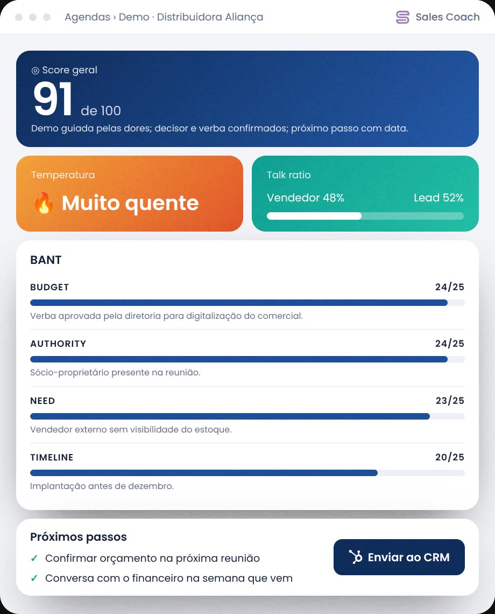
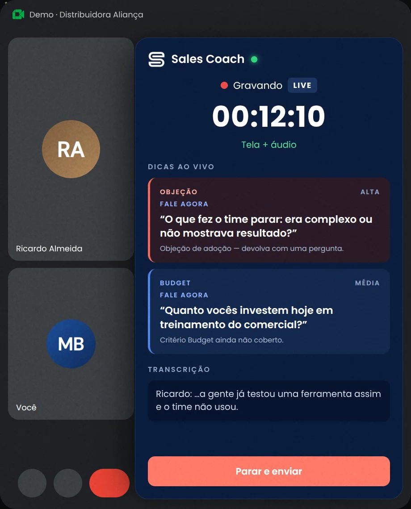

Vendas · disponível
O gestor não ouve todas as reuniões. O Sales Coach ouve.
Coach de vendas com IA, em português, no Meet e no Teams. Treina antes, orienta durante e analisa depois, pela metodologia da empresa.
- Treino com clientes simulados
- Dica ao vivo na objeção
- Nota com BANT, MEDDIC e SPIN
- CRM preenchido sozinho
- Assistente sobre as agendas
- Painel do gestor

